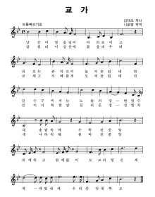
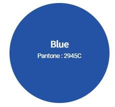

중앙대학교 상징물
-
청룡상
 본교의 대표적 상징물인 청룡상은 설립자 故 승당 임영신 박사가 흑석동 221번지 현위치에 학교부지를 매입할 때 꿈 가운데 나타난 청룡을 학교의 상징으로 정한데 근거하여 동창회 기금으로 건립된 뜻깊은 기념물이다.
본교의 대표적 상징물인 청룡상은 설립자 故 승당 임영신 박사가 흑석동 221번지 현위치에 학교부지를 매입할 때 꿈 가운데 나타난 청룡을 학교의 상징으로 정한데 근거하여 동창회 기금으로 건립된 뜻깊은 기념물이다.
-
중앙대학교 교가

작사 - 김태오,작곡 - 나운영
교가 1절
남산이 영을 넘어 바라보이고 뒤로는 관악산이 높이 솟았네..한강수 굽이치는 노들의 강변 명수대 송림속에 우뚝선 중앙..의에죽고 참에 삶이 모교의 정신 세계에 빛내세 우리 중앙대학교.
교가 2절
삼천리 이강산에 꽃을 피우려 굳세고 지혜롭게 모여들었네..진선미 거룩한맘 길러온 정성 힘차게 나라위해 몸바친 중앙..의에죽고 참에 삶이 모교의 정신 세계에 빛내세 우리 중앙대학교.
-
중앙대학교 교색

중앙대학교의 교색인 CAU Blue는 변화와 발전을 창조하는 중앙대학교의 힘차고 진취적인 모습을 상징하고 있다. 진리와 지혜의 상징인 Blue를 교색으로 정함으로써 꿈을 향해 매진하는 중앙인의 성실하고 생동감 있는 모습을 나타내고 있으며, 중앙대가 지향하는 젊음, 첨단, 미래, 역동 등의 발전 지향적인 이미지를 더욱 강화시키고 있다.